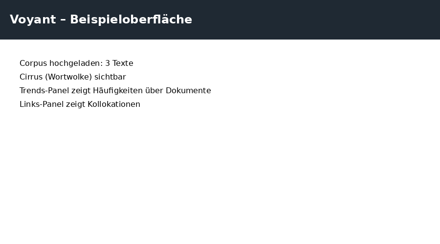
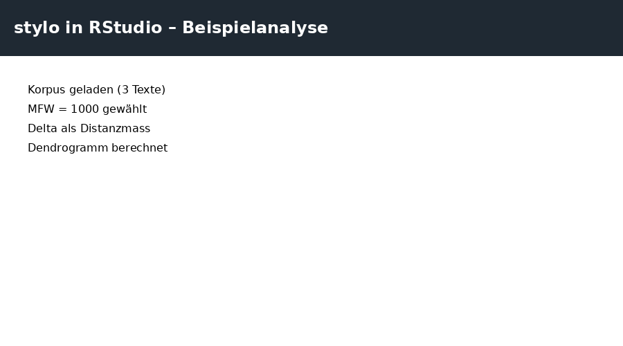

Modul 6 – Tools und Routinen
In diesem Modul lernst du, wie stilometrische Routinen durch konkrete digitale Werkzeuge operationalisiert werden. Wir unterscheiden drei Ebenen:
- Exploration: schnelle Sichtung von Mustern (Voyant)
- Analyse: reproduzierbare Berechnungen (stylo in R/RStudio)
- Methodik: systematische Routinen (forTEXT)
6.1 Exploration: Voyant
Voyant ist ein browserbasiertes Explorationswerkzeug für Textanalyse. Es eignet sich besonders für:
- erste Sichtung von Wortfrequenzen
- Vergleich mehrerer Texte
- Visualisierung von Verteilungen (Trends, Cirrus, Links)
👉 Voyant öffnen (https://voyant-tools.org/)
Beispielkorpus für Übung: voyant_corpus.txt herunterladen
Aufgabe 6.1 – Zweck von Voyant (MC)
6.2 Reproduzierbare Analyse: stylo + RStudio
Für systematische Stilometrie wird häufig das R-Paket stylo genutzt. Dafür benötigst du zunächst RStudio Desktop.
👉 RStudio Desktop herunterladen (offiziell)
Nach der Installation von RStudio kannst du stylo installieren. Schau dir dazu dieses Tutorial an:
👉 Video: Tutorial zur Installation von stylo
Beispielkorpus für Übung: stylo_corpus.txt herunterladen
Aufgabe 6.2 – Reihenfolge der Routinen (Freitext)
Welche stilometrische Routine ist zuerst nötig: Tokenisierung, Normalisierung oder Featurewahl? Begründe kurz.
6.3 Methodische Routinen: forTEXT
forTEXT bietet eine systematische Sammlung stilometrischer Routinen, die den gesamten Prozess strukturieren:
- Korpusdesign
- Vorverarbeitung (Tokenisierung, Normalisierung)
- Featurewahl
- Distanzberechnung
- Visualisierung
- Interpretation
👉 forTEXT-Routinen (offizielle Übersicht)
Aufgabe 6.3 – Routinen zuordnen (MC)
Welche der folgenden Punkte gehört zu den forTEXT-Routinen?
6.4 Transfer: Tool-Kette verstehen
Aufgabe 6.4 – Synthese (Freitext)
Erkläre in 3–5 Sätzen, wie Voyant, stylo und forTEXT zusammenwirken. Verwende die Begriffe: Exploration, Parameter, Routinen, Interpretation.